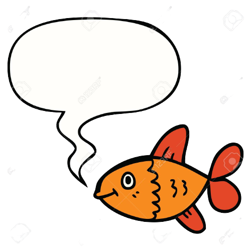

Ocean Ecosystem
By Ritvhik & Leon
Oceans are a place consisting of various organisms but its so vast that many different habitats are present within the ocean itself such as the sunlight zone,midnight zone each of these creatures have adapt to their own habitat and have their own food chains

Layers of the Ocean

Sunlight Zone
The sunlight zone(0 - 600 ft) is the first zone beneath the sea level. It's mainly inhabited by whale, sharks, surface level fishes, coral reefs, jellyfish and turtles
Twilight Zone
The twilight zone(600 - 3300 ft)is the second zone beneath the sea level. This area receives a very minimal amount of sunlight and is usually dark and foggy. Some examples for the animals that live here are lantern fish and viper fish

Midnight Zone
The midnight zone(3300 - 13000 ft) is the third zone under the sea level. This zone recieves no sunlight and hence the name "Midnight Zone". So the predators in this zone use their own light and have great vision to catch the prey. Animals in this zone can also vibrations very easily, as there is not much light. Animals in this zone include angler fish, tripod fish and vampire squid.

Abyssal Zone
This zone is the fourth zone of the ocean and goes up to 20000ft. The pressure in this zone is between 200 and 600 atmospheres and it can get as cold as 0 degress celsius due to the lack of sunlight. it is again mainly inhabited by viper fish, angler fish and some types of jellyfish.

Trenches
Trenches are the deepest part of the ocean. They go much below 20000 ft. Trenches are small valleys and pits in the ocean, that go much deeper than the deepest part of the seabed. The deepest of these trenches is the mariana trench which goes all teh way below 36000 ft. Some of the animals that live in these parts of the ocean are dumbo octopus, goblin shark, snail fishes and some types of jelly fishes.
/cloudfront-ap-southeast-2.images.arcpublishing.com/nzme/L5TSAQZXSI2U74WFIEDYMGCETU.jpg)
Plants in the ocean
There are five types of ocean plants. Phytoplankton, Red Algae, Kelp, Sea Grass and Sargassum.
Fun Facts

EPURRRA?
- The ocean is home to 94% of all life on earth
- The ocean provides more than 50% of oxygen on earth
- There more historical artifacts in the ocean than in all of the worlds museums combined.
- Sharks are more older than trees